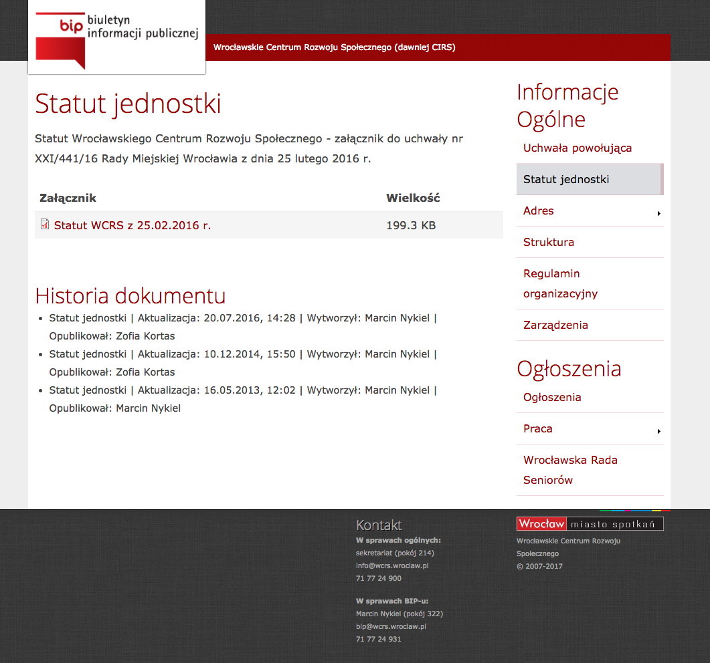
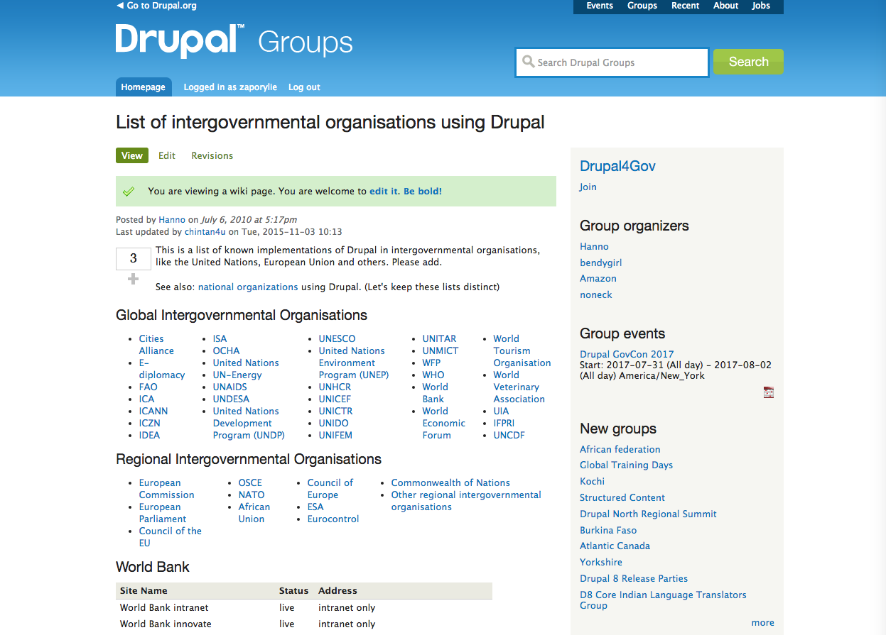

Drupal in government
around the glob
Who am I?
Frequent Drupal Conference Traveler™
FOSS enthusiast
Drupal Developer @NyMediaAS
Former Local Government employee
- I like to Drupal-travel, visit places I've never visited before, using Drupal as an excuse
Why this topic?
- Given my experience it is something I care about :)
Public Information Bulletin
The Biuletyn Informacji Publicznej, BIP for short (or, the Bulletin of Public Information),
is a Polish system of unified public records online, consisting of an array
of standardized pages created with the general public in mind. For those
interested in the operation of any particular institution in Poland or in finding a way
of contacting them in order to settle a particular matter, the BIP given entry is often
the optimal source of data and background information.
Or it is suppose to be one :)
Public Information Bulletin
Every Polish citizen has right to access Public Information
Every public entity, such as local government or public agency, must provide
standardized access to public data
Content can be modified only by creating new revision. Citizen
must have access to content revision history. Content cannot be deleted.
Public data must be well structured.
Content must be stored along with information who and when
created and modified it

Why I'm telling this? Because every public entity which operates based on public funds must have
one of these. All of theme are structured exactly the same. All of them can even look
the same (usually separate domain from website). All BIP instances struggles with the same maintenance tasks.
Can you see where I'm going here? Room for FOSS!
Why FOSS matters?
Cost effective
Security
Stability
Avoiding vendor lock in
Reusability
Transparency and freedom
- Drupal is entirely free and doesn't have licensing fees
Resources
Drupal Association
Drupal Association
drupal.org
drupal.org/resource-guides/launching-government-website
drupal.org/industries
drupal.org/industries/government
Community:
Local government
https://groups.drupal.org/node/24119
Drupal4Gov
https://groups.drupal.org/government-sites
https://groups.drupal.org/node/79093

Distributions are full copies of Drupal that include Drupal Core, along with additional
software such as themes, modules, libraries, and installation profiles.
- Drupal Docs
This sound a bit too technical, doesn't it? Let's take example description from one of the most popular gov distributions.
The X distribution combines Drupal Core and Drupal modules to enable the quick creation of government websites. Managed and maintained by the Department of Y, the distribution is WCAG 2.0 AA compliant and follows best-practice service design.
- govCMS
What does it mean in practice? That we can easily build sites which are:
- compliant with strict accessibility requirements,
- fully multilingual,
- follows best practice in terms of security, hosting and design
Find more on drupal.org 56 75 case studies!
14 on D8!
DrupalCamp Nordics
Stockholm 2018
OpenSource for Government
¿Oslo 2018?